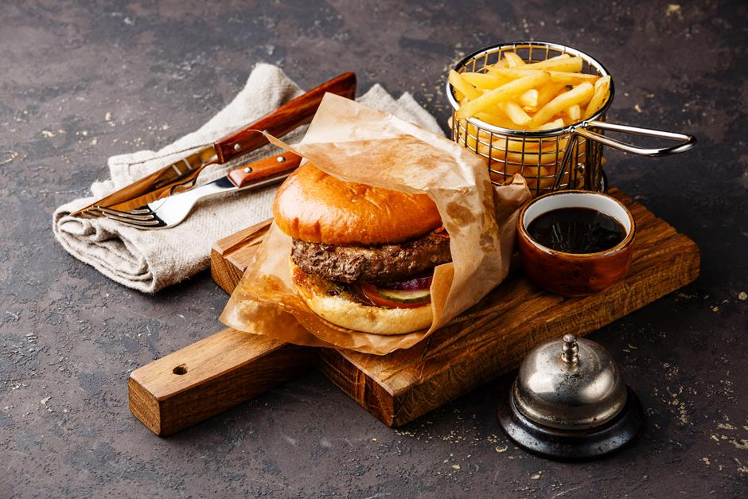

NOSSA HISTÓRIA
Em 2022 retorna a Tatuí uma história de sucesso na década 80.
O já famoso O Grill ressurge agora como Tábua Grill para alegria dos apreciadores de um excelente lanche gourmet.
Com um novo formato e constante inovação, sempre mantendo sua principal característica de um restaurante Gourmet.
E assim o tão famoso lanche na tábua, o delicioso brownie e saborosos pastéis, unidos á um ambiente agradável com garçons que nos fazem rir.
Frequentado por importantes nomes de nosso cenário, o restaurante Tábua Grill vem se destacando com seus deliciosos pratos e seu ambiente agradável para amigos e familiares.
Fazendo com que o prazer de estar em família ou entre amigos continuem vivos.
O restaurante Tábua Grill é fruto de inúmeras oportunidades criadas por Deus para abençoar nossa querida Dona Benta, sua família e todos aqueles que estão ou já passaram por esta empresa.
Os vinte reais que tínhamos em caixa para nossa inauguração e que se multiplicaram fazendo com que nossa marca se torne mais conhecida e querida á cada dia, fortalecem nossa fé diariamente para acreditarmos no Deus que servimos.
E assim continuamos nossa batalha diária em busca de nossos sonhos e projetos.
MISSÃO
Fazer com que nossa comida mantenha sempre viva as boas experiências e memórias, através de produtos que são reconhecidos por sua qualidade, um atendimento dedicado e comprometido em proporcionar a melhor
experiência possível aos nossos clientes.
VISÃO
Sermos reconhecidos por nosso campo de atuação, combinar lucratividade com a autentica vocação e alegria de servir as pessoas, oferecendo-lhes o máximo de vantagens funcionais e emocionais, de maneira que
possamos atender a cada cliente o maior número de vezes possíveis. Sermos reconhecidos como referência e excelência gastronômica.
VALORES